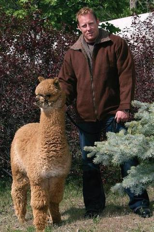
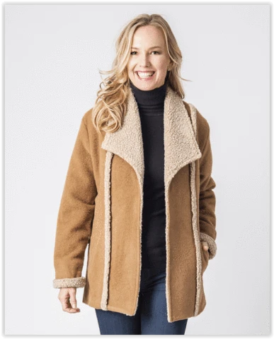
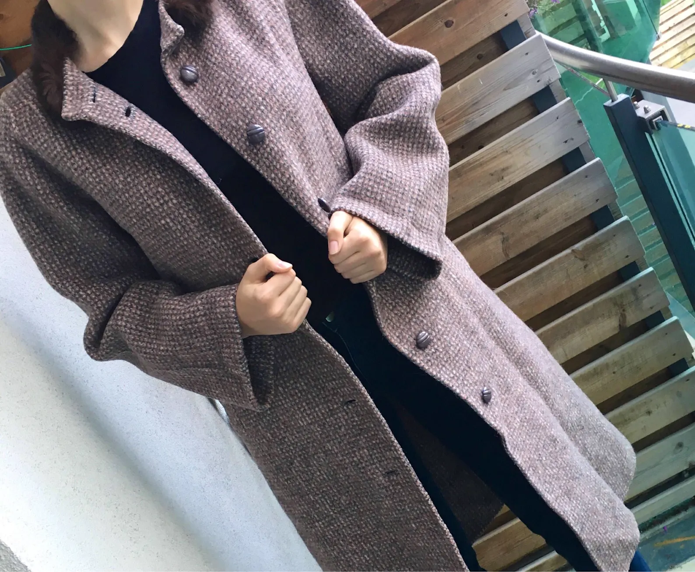

Where elegance and beauty come together
The style that JRivers brings is next to none, The elegance and beauty is like no other.
| Men's Jackets | Women's Jackets | Alpaca for kids |
|---|---|---|
|  |  |  |
This piece is a must have for being fashionable in cold weather.
Extremely warm for extreme cold weather. This Men's Alpaca Barn jacket has a Faux Sherpa lining for style and warmth. Wool and alpaca exterior. A very popular and loved item for years running.This piece is a must have for being fashionable in cold weather. Sizes: SM, MD, LG, XL, XXL (unisex sizes - women order one size smaller than usual) Colors: Chocolate Brown, Charcoal Grey Materials: 50% Alpaca/50% Wool Exterior, Faux Sherpa lining Sorry, this item is only available to USA customers.
"Ladies Alpine Coat"This comfortable every day coat is both stylish and functional. The 50% Alpaca, 50% wool shell is lined and accented inside and out with a super soft and warm contrasting Sherpa. The carefree open design and two side pockets make this the perfect coat. Sizes: MD, LG, XL Sorry, this item is only available to USA customers.
"Stamos Alpaca Jacket"The Stamos Alpaca Jacket has two interior pockets, one on either side. While the jacket itself is not thick, because it is a blend of 50% alpaca and 50% wool, it will be warmer than a traditional 100% wool coat of similar thickness. The lining of the torso section is Sherpa and the lining of the arms are a black satin. It fits true to size. The shell itself is structured but still soft to the touch.
Our Snow Boucle'("boo-clay") Alpaca Snow hat is all the rage again this winter. A soft and fun design is the focus of this alpaca product. This comfortable and warm accessory ads a fun lift to your outfit.